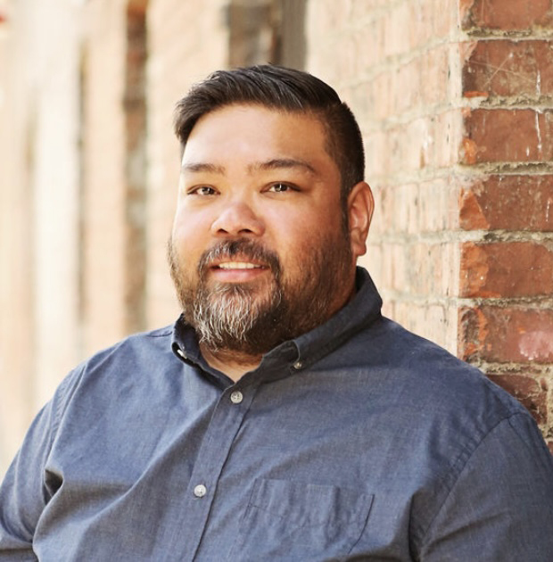

My Bio
Hello my name is Mervin. I was born in the Philippines and moved to California when I was 14, moved to Spokane when I was 16 and have been living here since. I graduated from EWU with a double major in Computer Science and Visual Communication Design under the tutelage of Mindy Breen. I am currently the Associate Product Designer for a cloud-based video surveillance company based in Liberty Lake.